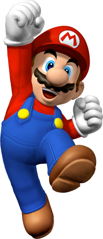
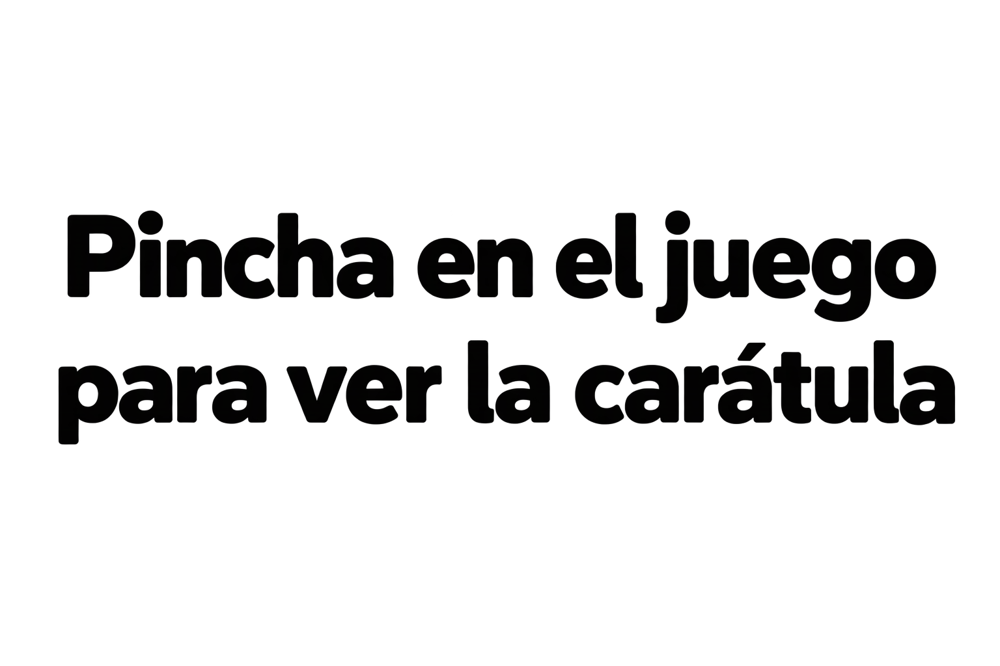

Mario, el rojo y original

En su primer videojuego se dedicó a saltanar tones lanzados por un simio para así salvar a una princesa para despúes tener su propia serie convirtiéndose en uno de los personajes mas conocidos del mundo del entretenimiento y principal mascota de Nintendo
Los principales juegos donde aparece son:
- Super Mario Bros. (1985)
- Super Mario Bros. 2 (1988)
- Super Mario Bros. 3 (1988)
- Super Mario World (1990)
- Super Mario World 2: Yoshi's Island (1995)
- Super Mario 64 (1996)
- Super Mario Sunshine (2002)
- New Super Mario Bros. (2006)
- Super Mario Galaxy (2007)
- New Super Mario Bros. Wii (2009)
- Super Mario Galaxy 2 (2010)
- Super Mario 3D Land (2011)
- New Super Mario Bros. 2 (2012)
- New Super Mario Bros. U (2012)
- Super Mario 3D World (2013)
- Super Mario Odyssey (2017)
- Super Mario Bros. Wonder (2023)
